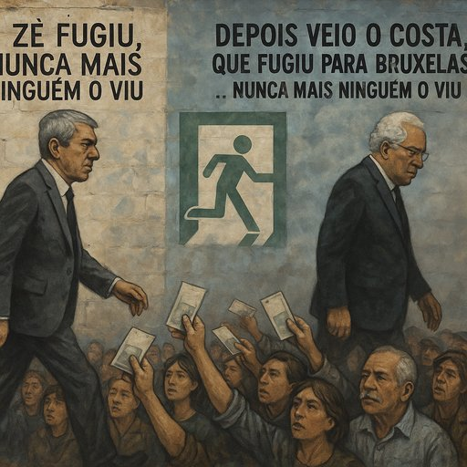

Publicado em 2025-06-01 17:26:41
"O Zé fugiu, nunca mais ninguém o viu.
Depois veio o Costa, que fugiu para Bruxelas…
Nunca mais ninguém o viu."
Portugal é um país onde os políticos aparecem em campanhas,
desaparecem em escândalos,
e reaparecem em cargos internacionais — sempre com um sorriso e passaporte diplomático.
Chamava-se José Sócrates.
Chegou com promessas de modernidade, computadores para todos, obras públicas para encher o olho.
Mas saiu com o país falido, sob o peso da troika,
e com um ar de quem vai para Paris filosofar sobre o caos que deixou.
Não se demitiu com vergonha.
Fugiu. Com pose.
Enquanto Portugal cortava salários, congelava pensões e emudecia de humilhação.
E nunca mais ninguém o viu — senão em tribunais, entrevistas envenenadas, e livros que poucos leram.
Ar de homem ponderado, sorriso treinado.
Um conciliador profissional.
Limpou a imagem do partido. Geriu. Equilibrou contas.
Mas também geriu silêncios.
Nunca quis saber demais sobre o Zé.
E quando os fantasmas do pântano começaram a emergir — buscas, suspeitas, empresários amigos —
fugiu para Bruxelas.
Não como réu. Mas como comissário.
Uma fuga sem escândalo. Uma transição sem espanto.
Uma manobra à portuguesa.
E nunca mais ninguém o viu — pelo menos a responder às perguntas que interessam.
Portugal tornou-se mestre em transformar figuras políticas em desaparecidos institucionais.
Hoje estão no poder.
Amanhã estão na ONU, na OCDE, em Bruxelas, em Paris, num conselho de administração qualquer.
E o povo?
O povo continua:
Cantamos Abril,
mas vivemos Fevereiro:
o mês da fuga curta, do disfarce longo, da memória fraca.
O Zé fugiu.
O Costa fugiu.
E amanhã… alguém fugirá também.
Porque neste país, a impunidade apanha sempre o último avião.
Mas há quem se lembre.
Há quem escreva.
Há quem desenhe murais onde a verdade ainda pinga pelas fissuras do silêncio.
E enquanto isso acontecer —
eles fogem… mas nunca nos enganam para sempre.
Augustus Veritas
Observador de ausências, cronista do caos, sentinela do povo